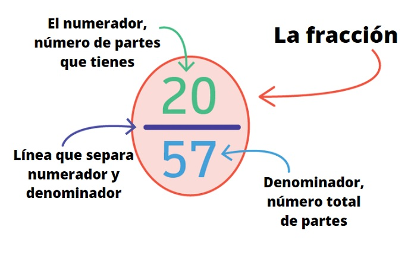
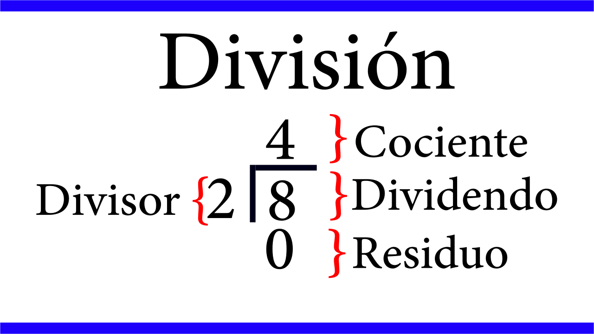

Expresión de fracciones como decimales
Bienvenidos al primer tema
Proceso de Desarrollo de Aprendizaje: Usa diversas estrategias al convertir números fraccionarios a decimales.
Proceso de Desarrollo de Aprendizaje: Usa diversas estrategias al convertir números fraccionarios a decimales.
Docente: Sergio Javier García Camargo
Número de teléfono: 6181240013
Correo: sergio.garcia.camargo@bycened.mx
Expresión matemática que se utiliza para representar las partes de un todo. Es decir, es un número entero que ha sido dividido en partes iguales, donde cada parte es la fracción del entero. Toda fracción es una división y toda división es una fracción.
Las fracciones se utilizan en una amplia variedad de contextos en la vida cotidiana, su uso más común es en la cocina, al seguir recetas, a menudo se utilizan para medir ingredientes. Esto es esencial para obtener las proporciones correctas de los elementos en una preparación culinaria. Por ejemplo, 1/4 de taza de azúcar, 1/2 cucharadita de sal, etc.

Para convertir una fracción en un decimal, dividimos el numerador entre el denominador. Si tenemos un número mixto, el número natural se mantiene a la izquierda del punto decimal.

Decimales finitos: son aquellos que tienen fin, es decir, no hay un número que se repita.
Siempre que se divida el numerador por el denominador, y la división termine y se obtenga resto
cero, la división es exacta y su resultado será un decimal finito.
Un decimal finito representa una fracción decimal.
Ejemplos: 4,56 ; 0,0003 ; 2,9876 : 0,1 ; 3,42 , etc
Realiza las siguientes conversiones de fracciones a número decimal en tu libreta y después responde las siguientes preguntas
Verdadero
Falso
Esta fracción cuenta con una infinidad de decimales
Falso
Cuenta con una infinidad de decimales
Verdadero
Decimales infinitos: Son aquellos números que no se acaban, es decir, hay uno o varios números
que se repiten infinitamente. Estos números son divisiones inexactas. No representan una fracción decimal.
Por ejemplo: 0,333333..... es infinito por que el 3 se repite
indefinidamente.
Los decimales infinitos pueden ser: infinitos puros, infinitos periódicos e infinitos semiperiódicos.
Son aquellos que tiene una o más cifras que se repiten sucesiva e infinitamente, formando el período. Se escribe en forma abreviada coronando al período con un pequeño trazo.
Lea el párrafo que aparece abajo y complete las palabras que faltan: fracciones, periódica, aleatoria, decimal
En estos decimales aparecen una o más cifras antes del período. El número formado por dichas cifras se llama anteperíodo (es un número que está entre la coma y la rayita).
Lea el párrafo que aparece abajo y complete las palabras que faltan: semiperiodicas, periódicas, finita, indefinidamente
Obra publicada con Licencia Creative Commons Reconocimiento Compartir igual 4.0